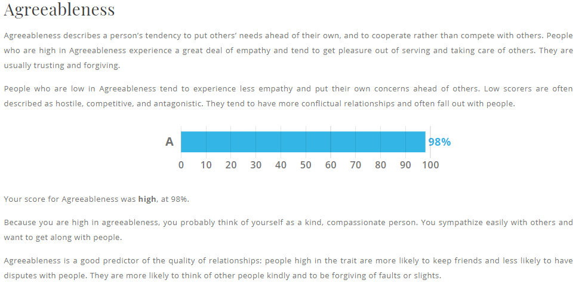
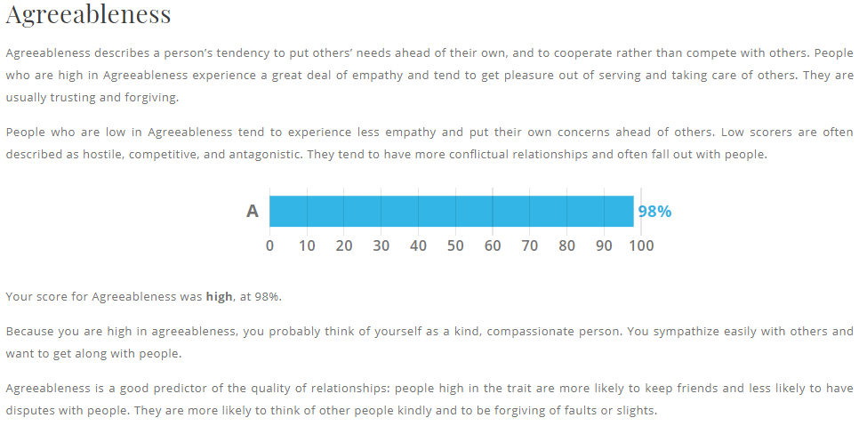

Welcome to my Profile!!
Introduction
Name: Dan Nguyen
Student Number: s3721471
Email address: s3721471@student.rmit.edu.au
My Background
Background Information:
- Date of birth: 11/10/1999
- Nationality: Vietnamese
- Citizenship: Australian
- Education: Kindergarten (2004), Sunshine East (2005-2008), Sunshine Harvester (2009-2011), Maribyrnong Secondary (2012-2013), Suzanne Cory High School (2014-2017)
- Languages: English and Vietnamese
Fun facts:
- For sports I play badminton
- Music instrument I play piano
Ideal Job
Web/App Developer
My Ideal Working Environment:
- Flexible working hours
- Work from close to home
- Decent to above average pay
What I look to get out of it:
- Broader programming techniques/knowledge (key skills)
- Good social connection with colleagues
Priorities for Clients:
- Customer/Client satisfaction
- The ability to fulfil their needs
This position is looking for an employee who can provide support and feedback for clients. In this case, they require employees with high understanding of Microsoft based systems and being able to problem solve issues on the client’s side. Apart from skill requirements, they are looking for individuals who bring a positive attitude and a can-do attitude.
This job is ideal because it offers a safe and productive work environment where it aims to improve the quality of life for teachers and students at schools through an app and website called “Compass”. Their key focus is client satisfaction which is a priority of mine when it comes to web or app development.
The job is looking for employees that have: a high understanding of Microsoft based technologies, troubleshooting of hardware and software on user devices, ability to train and support a broad range of users and creation and maintenance of user accounts on Active Directory. These skills that are required are the skills I hope to have learnt in the course to be able to help me be employed and to be able to make a difference to the users of the App and Web to help make schooling easier.
They are also looking for employees with high energy and positive attitudes which I can provide as I am passionate about the job and being able to work with new colleagues. I am also looking to be able to work in schools especially with teachers and students to teach them about the use of Compass and how it can improve their teaching capabilities.
The pay and location is fitting of my ideals with the pay between $50,000 - $65,000 and the location being half an hours drive from home is also ideal. There are a team of workers who aim to deliver the best service
MORE TO DO
Personal Profile
Myers-Briggs Test: https://www.16personalities.com/free-personality-test

Online learning style Test: http://vark-learn.com/the-vark-questionnaire/

Big Five Personality Test: https://www.truity.com/test/big-five-personality-test


 

What do the results of these tests mean for you?
There are similarities between the Myers-Briggs test and the Big Five Personality test with the extraversion category (sociable and outgoing) being 79% and 67% respectively. This suggests that I am willing to interact and meddle with my peers and colleagues and be flexible. My high levels of agreeableness shows that I am willing to cooperate with my peers rather than assert that my ideas are right and final. All these results portray the fact that I am ready to work with others.
How do you think these results influence your behaviour in a team?
Results show that although I am open and agreeable, I am an observant type therefore instead of contributing to the team at first, I am more likely to observe and listen to the others. I am also willing to speak to the team of any possible flaws in the program so that solutions can be found to fix the flaw. As well as being a visual learner, I may choose to decide to draw out the plans for the project using a mind-map to make things clearer for myself and the team.
How should you take this into account when forming a team?
I hope to be able to work in a team with similar qualities like myself or have different learning techniques so we can learn from one another and be productive together. On the other hand, I am also able to work with a team where someone takes charge and gives us tasks to do as working under instructions can be more efficient than working without knowing the goal.